-
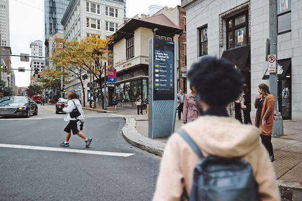
LinkPGH
Public process, conducted via the Ford City of Tomorrow Challenge, to bring up to 50 Links to the City of Pittsburgh.
-
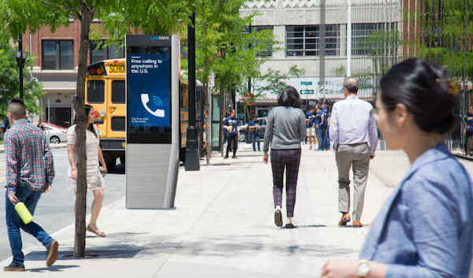
LinkNWK
Up to 45 Links in the City of Newark, including 15 in "equity locations". Deployed in partnership with the Newark Community EDC and the City of Newark.
-
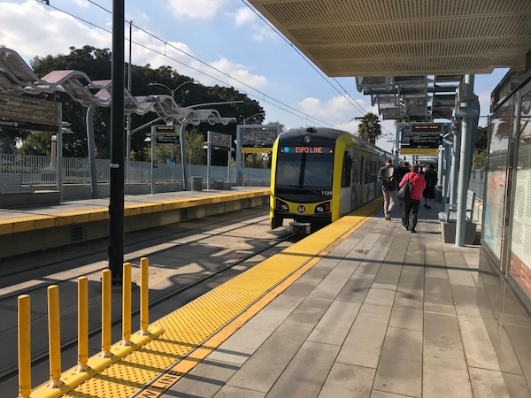
LA Metro Next Generation Customer Experience
Actionable roadmap to leverage digital advertising screens to improve customer communications at LA Metro, including interactive system maps, trip planning and real time arrival information.
-
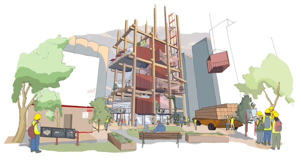
Sidewalk Labs Founding Vision Book
A vision for government technology, built "from the Internet up". Presented to the Alphabet board, and submitted in part as Sidewalk Labs' vision for Waterfront Toronto.
-
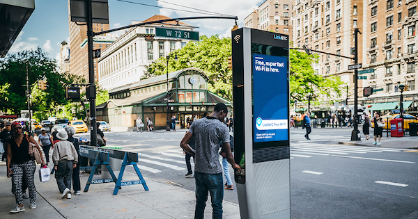
LinkNYC
Control Group and Titan (now Intersection)'s successful bid to replace New York City's 7500 payphones with Link, the payphone of the future featuring gigabit WiFi, free phone calling and digital city services on a 13" tablet.
-
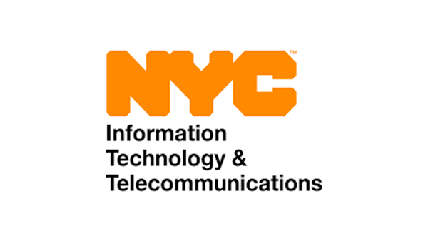
NYC DoITT Systems Integration 3 Contract Vehicle
Control Group's successful bid to join Department of Information Technology and Telecommunications (DoITT)'s on-call contract vehicle for systems integration projects up to $6 MM.
-
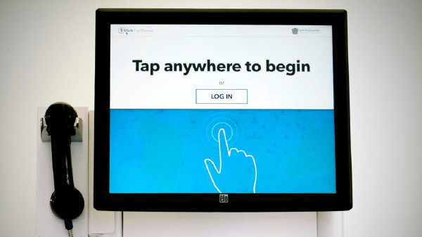
Rabbit Transit's VTCLI One Call System
Pilot kiosks to connect veterans in York, PA with economic opportunity. With Rabbit Transit, Cambridge Systematics and PennDOT.
-
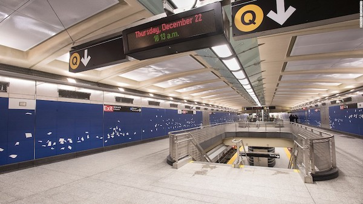
Second Avenue Subway (SaS) Advertising Master Plan
Advisory on digital communciations infrastructure and best practices to maximize advertiser value and customer communications potential at five new stations built as part of the SaS project. With Dattner Architects.
-

CitiBike Technology Advisory
Interim CTO and technology advisory to private equity investors contemplating an acquisition of CitiBike.
-
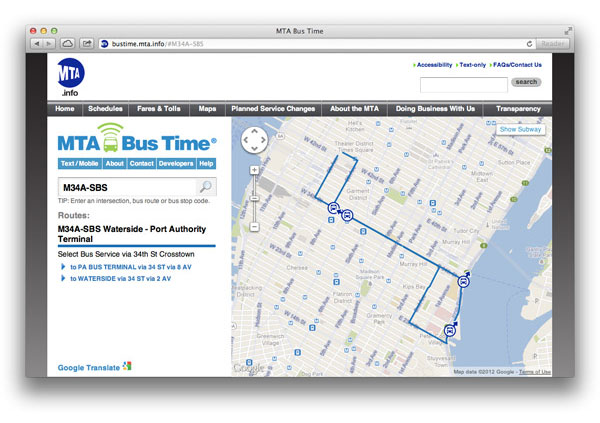
MTA Bus Time
A real-time, machine-learning powered system to transform noisy data inputs into accurate real time arrival information for customers of New York MTA's 6000 buses. MTA's largest purchase of an open source software system.
-
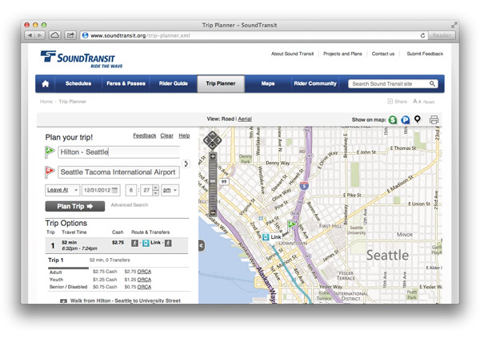
Sound Transit Trip Planner
Customization of OpenTripPlanner for Sound Transit in Seattle, WA, as well as customized web front-end based on the OpenGeo software stack.
-
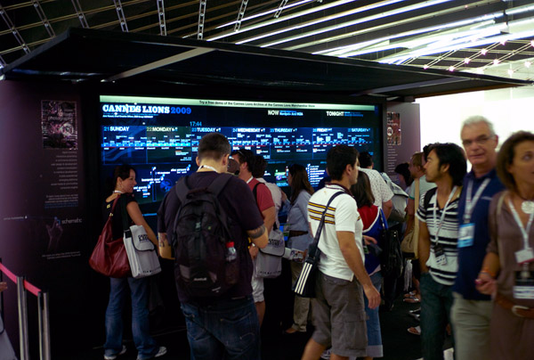
Cannes Touch Wall
A personalized RFID-powered directory and wayfinding system deployed at the largest adveritsing festival in the world, the Cannes Lions festival.
-
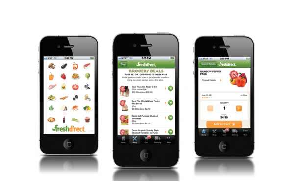
Fresh Direct iPhone App
Quality assurance, business rules validation and systems integration testing for Fresh Direct's new iPhone app.
-
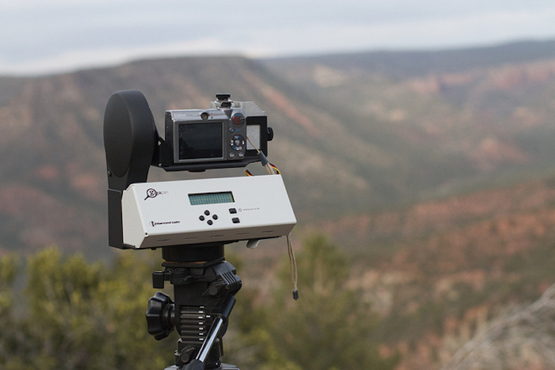
GigaPan
A robotic camera mount and online community to capture and share gigapixel+ panoramic images.
-
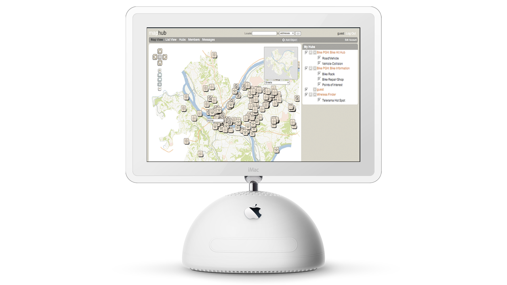
MapHub
A wiki-like, community-editable geographic information system (GIS).
-
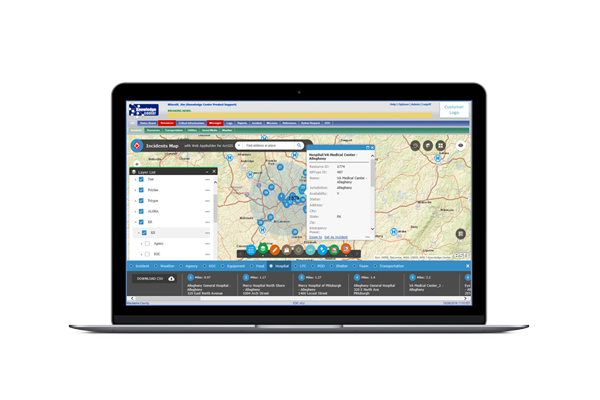
Knowledge Center
Web based decision support and incident response system for emergency responders in Western Pennsylvania.
-
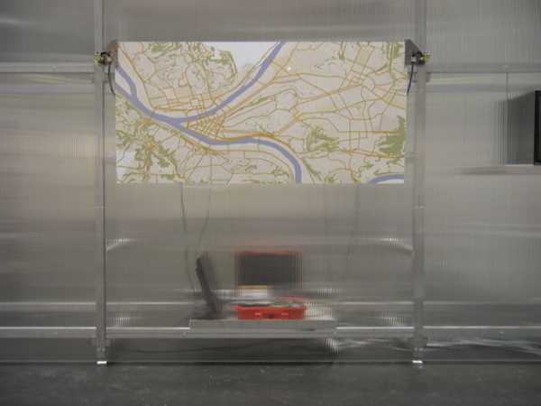
MapMover
A robotic system to capture audio via an interactive voice response (IVR) from users in Pittsburgh, and playing them back in Karlsruhe, Germany. Exhibited as part of "Making Things Public", curated by Steve Dietz and Bruno Latour.
-
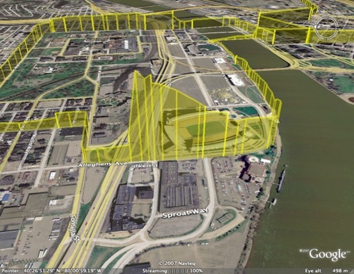
Environmental Sensor Ride
System to collect, map and visualize key environmental indicators including carbon monixide, carbon dioxide and others via bike.
-
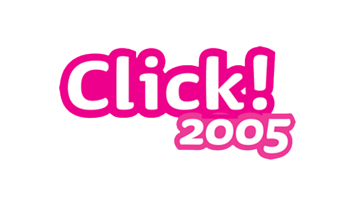
Click! 2005
A spy-themed role playing game designed for middle-school age girls that uses the City of Pittsburgh as a gameboard, teaching STEM skills.